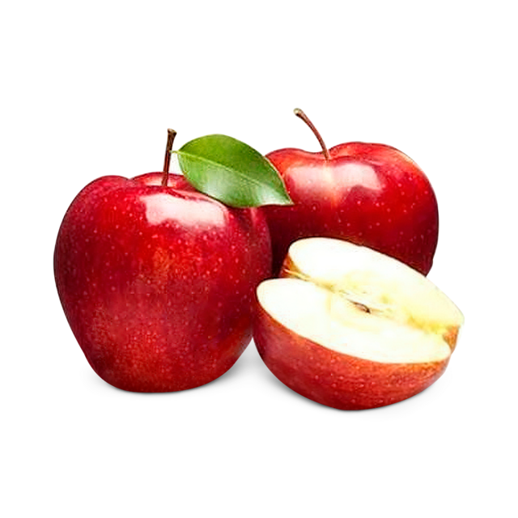
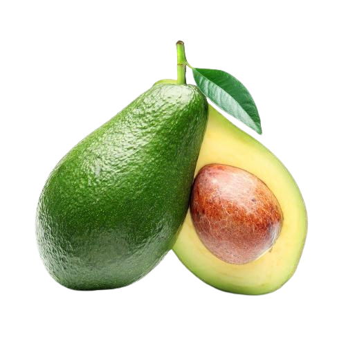
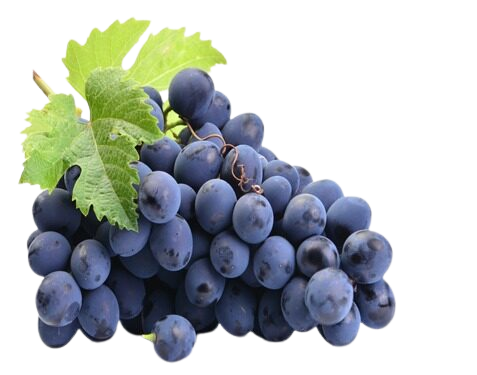

Frutas
Maçã
A maçã é a primeira da lista dos alimentos saudáveis, pois é rica em fibras, vitamina C e numerosos antioxidantes.
Abacate
O abacate é um superalimento rico em gorduras saudáveis, fibras e diversos nutrientes. Ele é ótimo para a saúde do coração e pode ser usado em várias receitas.
Uva
A uva é uma fruta deliciosa e rica em antioxidantes. Ela é uma excelente opção para lanches e também pode ser transformada em sucos ou vinhos deliciosos.
Imagens


